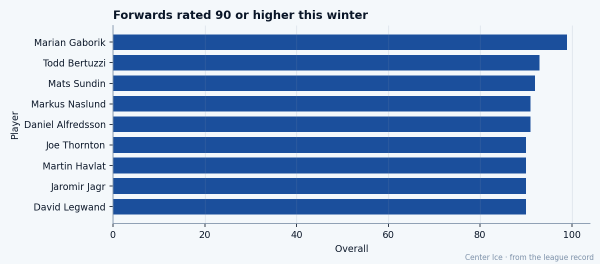

Daniel Alfredsson, at 33: what the Book says, what the room says
Potential 66. Overall 91. $11.40M with one year left and 11 wins in Ottawa.
 Tomáš VránaProfile writer · The Sweater
Tomáš VránaProfile writer · The SweaterThe contract ends on a Tuesday in July and the calendar hasn't moved in weeks.  Daniel Alfredsson91 is 33, in his twelfth season in a sweater the Bureau's record has him wearing since before anyone started keeping track, and the organization drafted him 133rd overall in 1994 with a potential grade of 66 attached to his name. The Book today reads 91.
Daniel Alfredsson91 is 33, in his twelfth season in a sweater the Bureau's record has him wearing since before anyone started keeping track, and the organization drafted him 133rd overall in 1994 with a potential grade of 66 attached to his name. The Book today reads 91.
The gap is not new. What is new is the number at the end of the line: $11.40M, 1 year left, and a team with 11 wins and 41 points through 41 games, sitting last in the Northeast division, 25 points behind  Toronto Maple Leafs. The ceiling was always wrong, and the contract is only now becoming the question.
Toronto Maple Leafs. The ceiling was always wrong, and the contract is only now becoming the question.
The road from Gothenburg
He came out of Gothenburg. He was 22 when Ottawa selected him in the fifth round of 1994, already a man with a career half-built in Sweden, and the pick carried the low ceiling you get when a scout writes projected NHL role: bottom-six winger, age 22, unlikely to develop further. The number 66 has followed him since then.
The Calder came in 1995-96, the captaincy shortly after. By 1997 he was demanding a trade over a contract worth $1 million less per year than what  Alexei Yashin83 was getting. He saw himself worth more than the organization's math allowed. He won the argument, or the organization blinked, and he stayed.
Alexei Yashin83 was getting. He saw himself worth more than the organization's math allowed. He won the argument, or the organization blinked, and he stayed.
What came after was twelve years of being above the ceiling and not getting credit for it. He scored 37 goals in 2001-02, put up 80 points in 2003-04, carried a team that met Toronto in the first round three years running and could not get past it. The Bureau raised his base grade over time but never touched the potential. The ceiling stays where it is; the floor rises. Nobody in the room called it a scandal.
What the Book says he is right now

At 33, this season, he has 24 goals and 19 assists for 43 points in 41 games. That is a pace of 86 over 82 games, on 21.6 minutes a night. His shooting percentage sits at 50 on the strength of a DEKG grade of 98, and his passing reads 97, which is the attribute that makes the 24 goals possible at all; he gets open not because he is fast but because the read is faster than the coverage.
The per-attribute picture is a player the Bureau built for a specific role: 98 deking, 97 passing, 95 on the hero grade, 94 accuracy, 93 puck control, 92 power-play and speed. Those grades describe a playmaker who carries a line and beats younger defenders with positioning instead of legs. The speed grade is 92, which is the grade you give a player who compensates for what he has lost by arriving early.
On the other side: 50 fight, 51 injury resistance, 52 shootout skill, 62 faceoffs. He does not win draws. He does not throw punches. The 62 faceoff grade means the coach sends him out and expects him to lose the draw and win the play that follows. He has had that assignment for a decade.
Morale reads 94. The man is not unhappy.
What the room says
 Ottawa Senators is 11 wins, 16 losses, 9 overtime losses. Forty-one points through 41 games. That is a team averaging 1.0 points per game, which in a 30-club league with 16 playoff berths is not a team that gets there. The Northeast has Toronto Maple Leafs at 66 points,
Ottawa Senators is 11 wins, 16 losses, 9 overtime losses. Forty-one points through 41 games. That is a team averaging 1.0 points per game, which in a 30-club league with 16 playoff berths is not a team that gets there. The Northeast has Toronto Maple Leafs at 66 points,  Boston Bruins at 52,
Boston Bruins at 52,  Montreal Canadiens at 44, and Alfredsson's side at 41. The gap to the playoff line, looking across the full league, is wide enough that even a heater from here to March 19 does not close it.
Montreal Canadiens at 44, and Alfredsson's side at 41. The gap to the playoff line, looking across the full league, is wide enough that even a heater from here to March 19 does not close it.
The dressing room next to him reads like this:  Martin Havlat90 at 90 overall, up 6 on the Development Index, 14 goals and 42 points in 41 games.
Martin Havlat90 at 90 overall, up 6 on the Development Index, 14 goals and 42 points in 41 games.  Marian Hossa84 at 84, out with an elbow, back on January 14 if the window holds.
Marian Hossa84 at 84, out with an elbow, back on January 14 if the window holds.  Wade Redden83 at 83 on the blue line.
Wade Redden83 at 83 on the blue line.  Radek Bonk82 at 82. That is not a bad room. That is a room that will not make the playoffs.
Radek Bonk82 at 82. That is not a bad room. That is a room that will not make the playoffs.
Havlat told the media what a young man says when he's up 6 on the Index and his team is last in its division: that the focus is on the next game, that the numbers come if the wins come, that he trusts the core. He meant all of it. He is 24 and still believes the process.
Alfredsson is 33 and has heard this before. Twelve years in Ottawa is twelve years of being good enough to matter without enough around him to win. The man has 95 on the hero grade. The Book thinks he shows up when it matters. The problem is that showing up is not enough when your team gives up 113 goals in 41 games and the man in net next to you is  Patrick Lalime88 at 88, who will take you to the second round on a hot winter and nobody more.
Patrick Lalime88 at 88, who will take you to the second round on a hot winter and nobody more.
The decision
What does $11.40M buy at 33 in a league where the cap is not yet binding? It buys the player the Book describes: 91 overall, 92 base, 24 goals in 41 games, 21.6 minutes a night, a pace of 86 points. It buys the 98 deke and the 97 pass and the man who has been above the number they set for him since before the last millennium turned.
It also buys the ceiling. Every time the Bureau publishes its Book, that 66 appears next to his name, and a general manager has to decide what it means for the contract. He has beaten it by 25 grades and shown no sign of falling back, but $11.40M for one year of a 33-year-old winger on a team with no playoff path puts the 66 at the top of the sheet. A GM who reads the 66 before the 91 is asking a different question.
Ottawa has one year. That means a decision in the next six months: extend a man who has been the face of this franchise since before most of his teammates were drafted, or let him walk and spend $11.40M on two players who might be 27 instead of 33. Neither the room's 94 morale nor the 11-16-9 record tells you the answer. The Book at 91 says he is still good enough to carry you somewhere, if you can get him there.
He turns 34 on December 11. The contract ends on a Tuesday in July. Between those two dates sits every decision either side has to make. The 133rd pick from Gothenburg has proven it for twelve years, 25 grades above what they wrote down.